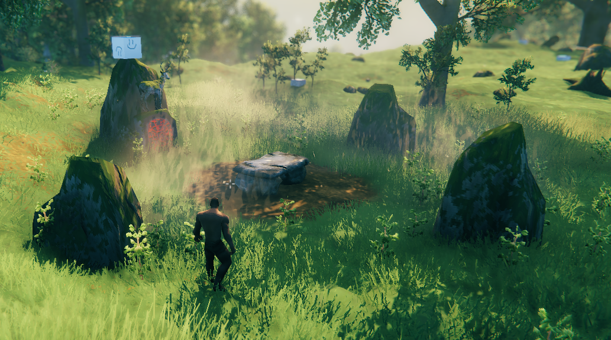
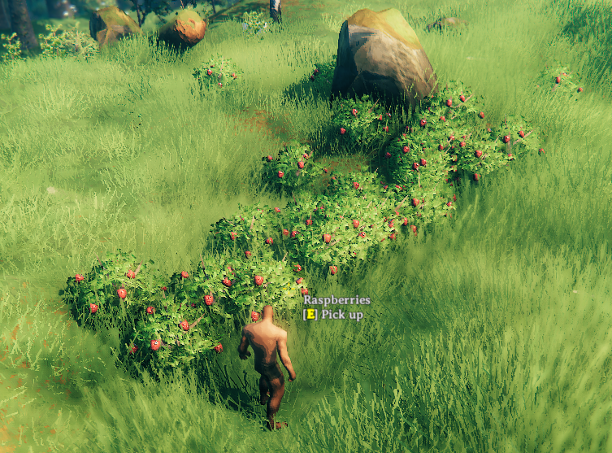
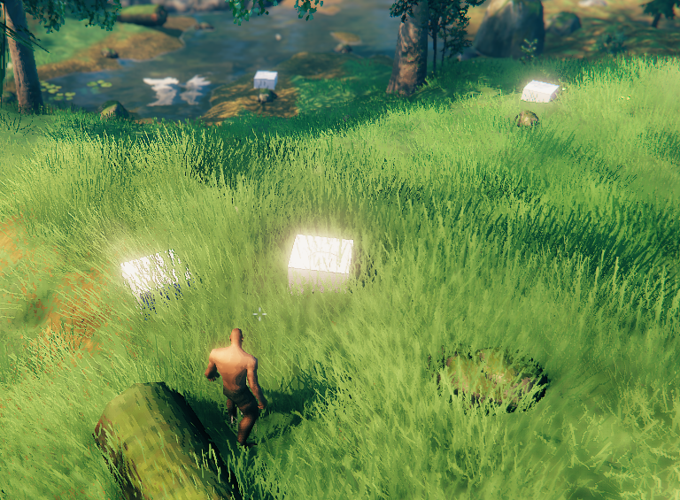

Zones / Locations / Vegetation
The world of Valheim is split up into Zones, each 64 by 64 meters, controlled by the ZoneSystem. Each Zone can potentially have a single Location instance, and many Vegetation instances.
Locations
Locations are bundles of objects that are placed randomly during world generation. These include the boss altars, crypts, Fulin villages and more. For a full overview, check the Locations list
These are unpacked only when a player gets close to the position of a placed location. Once unpacked, the GameObjects are saved like regular pieces.
Only GameObjects with a ZNetView.m_persistent = true will be saved and instantiated on load after unpacking.
Each Zone can contain only 1 location. This means that the number of slots is limited. Try to keep the total number of locations added low so everything has a chance to place.
Vegetation
Vegetation are singular prefabs that are scattered in a Zone. This is most of the spawned objects:
- Plants & trees
- Rocks: both normal stone & ore spawns
- Leviathans
- Ice in the Deep North
- Non-interactable effects like fireflies & mist
There is no limit to the number of vegetation in a single zone.
World generation
Valheim's worlds are procedurally generated exactly once using a provided seed.
Locations
When a new world is generated, the game goes through the list of available locations. The list is sorted so all locations with Prioritized = true are handled first.
The game will attempt to place Quantity instances of each location, it will attempt up to 100.000 times, or even 200.000 if it is Prioritized!
Every time it selects a random Zone and checks if there are no other location instances in this zone already and if the Zone matches the BiomeArea (in the middle of a Biome, or on the edge between different biomes)
If these checks succeed, it will then attempt to actually fit the location into the terrain up to 20 times (for this selected zone)
This is when the filters are used, everything is checked on the center of the location:
| Property | Effect |
|---|---|
| MinDistance MaxDistance |
The distance between the center of the world and this location should be between these values Configuring value 0 will match any distance |
| Biome | The location must be in a biome that matches this field. You can specify multiple biomes for a single location, any of these will match. |
| MinAltitude MaxAltitude |
The height of the location should be between these values. 0 is the shoreline. |
| InForest ForestThresholdMin ForestThresholdMax |
If enabled, the value of the forest fractal in the seed of this location must be between these values 0 is the center of the forest. 1 is on the edge of the forest Above 1 will move the location further from the forest edge |
| MinTerrainDelta MaxTerrainDelta |
The game will sample 10 random points in the circle defined by ExteriorRadius and calculate the local mininum and maximum height. The difference between these values is the TerrainDelta, which should be between the configured values. |
| DistanceFromSimilar | Check for other instances of the same location, or from the same Group if configured, if any are found within this range, this filter will failThis is disabled by default with value 0 |
Once a location passes all the checks it is registered to that location.
If a location fails to place all Quantity instances, the game will print a warning in the log.
When a player gets close to this zone for the first time, the location prefab is placed with these properties
| Property | Effect |
|---|---|
| SnapToWater | If enabled, spawns the location at the water level height instead of ground height (only useful if Altitude checks < 0) |
| ClearArea | Mark the area defined by ExteriorRadius to not spawn any Vegetation |
| SlopeRotation | If enabled, will rotate the location to face the slope. Priotized over RandomRotation |
| RandomRotation | If enabled, will rotate the location randomly. Will be ignored if SlopeRotation is enabled |
Vegetation
Vegetation is placed when a Zone is first discovered. The game will go through all available Vegetation, and attempt to place each type according to its configuration.
The number of attempts is determined by:
| Property | Effect |
|---|---|
| Max | Maximum amount of groups in the zone Values between 0 - 1 are used as a percentage chance to spawn a single group in this zone |
| Min | If the value of Max is above 1, this is used as the minimum number of groups |
| GroupSizeMin GroupSizeMax |
Number of instances in each group. The game will attempt to place this many, but there are no guarantees any will actually place |
Every attempt to place an instance of a Vegetation will go through these checks:
| Property | Effect |
|---|---|
| BlockCheck | If enabled, does a raycast down and check if there are no objects in the way on these layers
|
| Biome | The vegetation must be in a biome that matches this field. You can specify multiple biomes for a single vegeation, any of these will match. |
| BiomeArea | Check the position within a Biome, either in the middle of a Biome, or on the edge between different biomes |
| MinAltitude MaxAltitude |
The height of the vegetation should be between these values. 0 is the shoreline. |
| MinOceanDepth MaxOceanDepth |
If these values are not equal, check that the value of the OceanDepth from the seed is between these values. This is not the same as Altitude, not entirely sure how to interpret this |
| MinTilt MaxTilt |
Checks the slope of the terrain mesh at this point, using the normal of the mesh In degrees: 0 is flat ground, 90 is a vertical wall |
| MinTerrainDelta MaxTerrainDelta |
Only enabled if the TerrainDeltaRadius is not 0The game will sample 10 random points in the circle defined by TerrainDeltaRadius and calculate the local mininum and maximum height. The difference between these values is the TerrainDelta, which should be between the configured values. |
| InForest ForestThresholdMin ForestThresholdMax |
If enabled, the value of the forest fractal in the seed of this vegetation must be between these values 0 is the center of the forest. 1 is on the edge of the forest Above 1 will move the vegetation further from the forest edge |
Locations have a property ClearArea, enabling this will prevent any vegetation from spawning in the ExteriorRadius of the location.
ZoneManager
Jötunn provides a ZoneManager singleton for mods to interact with the ZoneSystem of Valheim.
Timing
Locations and Vegetation are loaded during world load. You can add your custom locations and vegetation to the manager as early as your mods Awake().
You can use the event ZoneManager.OnVanillaLocationsAvailable to get a callback to clone or modify vanilla locations when those are available for use but before your custom entites get injected to the game. This is called every time a world loads.
Adding custom and cloned locations & vegetation must only be done once. Modifications to vanilla locations & vegetation must be repeated every time!
Locations
Jötunn uses the LocationConfig combined with CustomLocation to define new Locations that will be injected into the world generation.
Modifying existing locations
Use ZoneManager.Instance.GetZoneLocation to get a reference to the ZoneLocation.
You can add prefabs to the m_locationPrefab to add them wherever this location is placed:
var eikhtyrLocation = ZoneManager.Instance.GetZoneLocation("Eikthyrnir");
var lulzCubePrefab = PrefabManager.Instance.GetPrefab("piece_lul");
var eikhtyrCube = Instantiate(lulzCubePrefab, eikhtyrLocation.m_prefab.transform);
eikhtyrCube.transform.localPosition = new Vector3(-8.52f, 5.37f, -0.92f);

Creating copies of existing locations
Use ZoneManager.Instance.CreateClonedLocation to clone a location. The cloned location is automatically added.
CustomLocation myEikthyrLocation = ZoneManager.Instance.CreateClonedLocation("MyEikthyrAltar", "Eikthyrnir");
myEikthyrLocation.ZoneLocation.m_exteriorRadius = 1f; // Easy to place :D
myEikthyrLocation.ZoneLocation.m_quantity = 20; //MOAR
Creating empty Location containers
To create new locations in code, use the ZoneManager.Instance.CreateLocationContainer. This will create a GameObject that is attached to a disabled internal container GameObject.
This means you can instantiate prefabs without enabling them immediately. It only creates the container, it still needs to be registered with ZoneManager.Instance.AddCustomLocation
GameObject cubesLocation = ZoneManager.Instance.CreateLocationContainer("lulzcube_location");
// Stack of lulzcubes to easily spot the instances
for (int i = 0; i < 10; i++)
{
var lulzCube = Instantiate(lulzCubePrefab, cubesLocation.transform);
lulzCube.transform.localPosition = new Vector3(0, i + 3, 0);
lulzCube.transform.localRotation = Quaternion.Euler(0, i * 30, 0);
}
ZoneManager.Instance.AddCustomLocation(
new CustomLocation(cubesLocation, false, new LocationConfig
{
Biome = Heightmap.Biome.Meadows,
Quantity = 100,
Priotized = true,
ExteriorRadius = 2f,
ClearArea = true,
}));
Creating locations from AssetBundles
You can also create your locations in Unity, it should have a Location component.
You can use JVLmock_<prefab_name> GameObjects to reference vanilla prefabs in your location by setting the fixReference parameter of the CustomLocation constructor to true.
// Create location from AssetBundle using spawners and random spawns
var spawnerLocation =
ZoneManager.Instance.CreateLocationContainer(
locationsAssetBundle.LoadAsset<GameObject>("SpawnerLocation"));
ZoneManager.Instance.AddCustomLocation(
new CustomLocation(spawnerLocation, true,
new LocationConfig
{
Biome = Heightmap.Biome.Meadows,
Quantity = 100,
Priotized = true,
ExteriorRadius = 2f,
MinAltitude = 1f,
ClearArea = true
}));
Vegetation
Jötunn uses the VegetationConfig combined with CustomVegetation to define new Vegetation that will be injected into the world generation.
Modifying existing vegetation
Modify existing Vegetation configuration to increase the group size:
var raspberryBush = ZoneManager.Instance.GetZoneVegetation("RaspberryBush");
raspberryBush.m_groupSizeMin = 10;
raspberryBush.m_groupSizeMax = 30;

Adding vegetation
Any prefab can be added as vegetation:
// Use vegetation for singular prefabs
CustomVegetation customVegetation = new CustomVegetation(lulzCubePrefab, false,
new VegetationConfig
{
Biome = Heightmap.Biome.Meadows, BlockCheck = true
});
This example defines very little filters, so this prefab will be found all over every Meadows.
